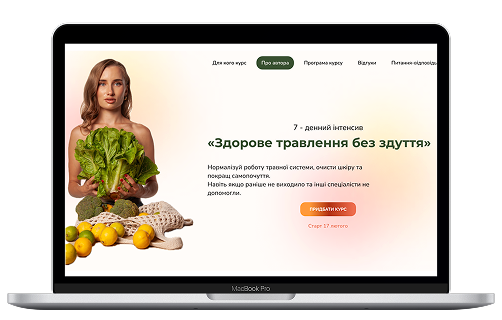

Проблеми з травленням;
Здуття, метеоризм, нудота, закрепи;
Відчуття неповного спорожнення.

7 - денний інтенсив
Нормалізуй роботу травної системи, очисти шкіру та покращ самопочуття. Навіть якщо раніше не виходило та інші спеціалісти не допомогли.
ПРИДБАТИ ІНТЕНСИВ
Проблеми з травленням;
Здуття, метеоризм, нудота, закрепи;
Відчуття неповного спорожнення.

Гастрит, дискінезія, холецистит, застій жовчі, дисбактеріоз;
Паразити, СРК, СНБР, СНГР.

Не допомагають стандартні методи;
Дієти та ліки дають лише тимчасовий ефект;
Дискомфорт залишається, попри консультації лікарів.

Інші симптоми;
Проблемна шкіра, випираючий живіт;
Хронічні захворювання (цистит, молочниця, тонзиліт).

Методичка по харчуванню, у якій ти знайдеш:
- акценти у харчування
- список продуктів, що мають бути в раціоні щодня
- принципи здорового та збалансованого раціону
- структура раціону
- лайфхаки
- ідеї сніданків, обідів та вечерь
- альтернативи шкідливим продуктам.
Щоденник харчування, що допоможе відстежувати свої харчові звички та зміни в організмі.
Базовий список аналізів

Вероніка Бельмега
Нутриціологиня


4,5 років практикуючий нутриціолог
5,5 років тренер тренажерної зали
12 років веду здоровий спосіб життя
За останні роки більше 500 успішних кейсів
Спікер на конференціях та курсах.


7 уроків + подарунок (“Методичка по харчуванню”, “Щоденник харчування” та базовий список аналізів)
Урок 1
Як ставити ціль, щоб вона мотивувала і що потрібно для того, аби не спинитися на половині шляху.
Урок 2
Як працює травна система та на що вона впливає?
Урок 3
Про детоксикацію печінки і роботу жовчного.
Урок 4
Чому кишківник - другий мозок?
Урок 5
Мікрофлора кишківника. На що вона впливає і як її нормалізувати
Урок 6
Причини проблем з травленням.
Урок 7
Покроковий план, завдяки якому позбудешся здуття, важкості, метеоризму, закреп раз і назавжди!
Розберешся в роботі травної системи та як її підтримувати
Зрозумієш причини порушення травлення та як їх усувати
Нормалізуєш травлення та покращиш загальне самопочуття
4000 грн 449 грн
ГОДИНИ
00ХВИЛИНИ
00СЕКУНДИ
00Після оплати ти отримаєш посилання на чат-бот, де і буде проходите навчання.
Щодня ти отримуватимеш від мене уроки.
Доступ до інтенсиву безстроковий.
Бонус: “Методичка по харчуванню”, “Щоденник харчування” та базовий список аналізів.
